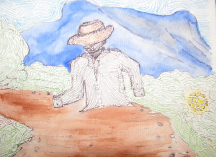
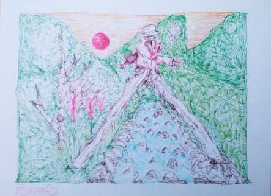
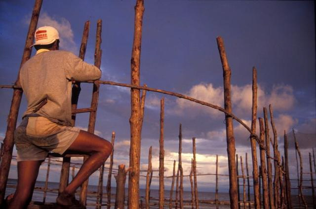
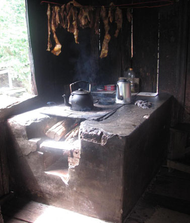
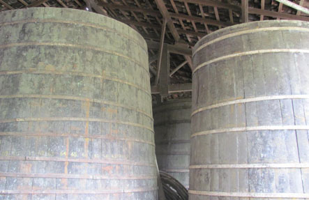

1. CULTURA CAIÇARA
Além de estudante do curso de Licenciatura em Artes Visuais na Escola de Musica e Belas Artes do Paraná (EMBAP/UNESPAR), sou morador de uma comunidade caiçara quase extinta pelos costumes habituais contemporâneos, de onde faço quase todos os dias o trajeto Morretes – Curitiba e Curitiba – Morretes. Tenho forte ligação com minha cultura, o que me faz preferir realizar o trajeto diariamente a me estabelecer definitivamente na capital.
O encontro com o tema abordado se deu desde muito cedo, na minha infância, quando atividades na agricultura, a produção de farinha de mandioca, de doces caseiros e a religiosidade eram muito fortes na minha família, além das lendas e contos relatados pelo meu falecido avô, que ilustravam meu mundo e meu pensamento. Em muitas histórias era fácil perceber a ligação com questões ambientais, como a preservação da natureza e as questões do ser humano e a relação com seu meio. Muitas lendas e mitos têm ligação e fazem parte do simbolismo de outras culturas como a indígena e africana, que vem a constituir os pilares da cultura caiçara.
As figuras lendárias demonstram a dependência da relação entre ser humano e natureza. A maioria das lendas está ligada a atividade rural, que com o abandono das atividades, e sua migração para outras áreas de trabalho, essas memórias acabam se perpetuando somente na sabedoria dos mais antigos. (LARAIA, Roque de Barros, 2006, p.145).

Figura 2-, Emer Ramos, Lenda da aparição só da parte de cima do corpo, de um homem, Nanquim sobre papel, 15x 8 cm, 2016.

Figura 3- Emer Ramos, Desenho sobre uma lenda contada por muitas pessoas, principalmente os antigos, sobre a pessoa que atravessa o rio com uma pernada só, Nanquim sobre papel, 30x22, 2015.
O povo caiçara teve origem a partir do século XVII, nas áreas litorâneas do Rio de Janeiro, São Paulo, Paraná e Santa Catarina. Ele traz em suas origens descendência de indígenas, de colonizadores europeus, principalmente os portugueses, e de pessoas escravizadas de origem africana. Apresenta uma forma de vida baseada em atividades de agricultura, pesca, caça, extrativismo vegetal e
artesanato, estabelecendo assim, contato muito forte com o meio ambiente que o rodeia.
O termo caiçara tem origem na palavra caá-içara, usada pelos índios da família tupi-guarani para denominar as estacas e galhos colocados no mar para a captura de peixes, que tem a definição: “caa” significa galhos, paus, e “içara” significa armadilha.

Figura 4 - Armadilha denominada caiçara.
O sistema de trabalho comunitário é muito presente seja na pesca, na agricultura, na construção e na produção de farinha de mandioca. A agricultura de subsistência e de extrativismo como a caça e colheita de palmito utilizava técnicas herdadas dos índios, o sistema de roças, que consistia na derrubada, seguida na queima da vegetação nativa para efetuar a plantação de vários alimentos como mandioca, milho, abóbora, arroz, feijão, batata doce, inhame, banana, cana e café, entre outros. Para não prejudicar o solo, fazia-se um rodízio do tipo de plantação.
Nas pescas as embarcações de origem indígena, eram construídas através de troncos de árvores, principalmente do caule do guapuruvu, (3 Disponível em hppt://informativo-nossopixirum. Blogspot.com.br/ acesso em 7 de jan de 2016.)
árvore nativa da região litorânea do Paraná, assim como as armadilhas contendo também elementos da cultura portuguesa, com equipamentos de pesca como os de ferrar e os sistemas de redes.
As casas mais antigas eram de pau a pique, ou de barro batido com teto de sapê, chão de barro, e fogão a lenha, mas as casas podendo também, com o passar do tempo, se adaptar às novas formas de construção.

Figura 5- Fogão a lenha caiçara
Determinadas localidades possuíam características interessantes, como o sotaque carregado com palavras e termos que são identificados em outros locais como expressões portuguesas antigas. A cultura caiçara é denominada uma cultura nacional distinta, podendo demonstrar elementos contraditórios.
Os caiçaras fazem parte das populações tradicionais brasileiras nas quais a mistura de uma série de aspectos culturais
originou uma série de mitos e lendas, técnicas patrimoniais e linguajar próprio que se diferencia dos outros. (DIEGUES, 2001,p 35).
A topografia da região do litoral, muito rica em recursos de água, favoreceu a formação desses grupos, onde os moradores mantinham pouca comunicação com o mundo exterior; os caiçaras eram um exemplo de comunidade harmônica com seu meio, evoluíram aproveitando os recursos naturais ao seu redor, entre o mar e a mata, hoje em dia passam a ter contatos, cada vez maiores, com o universo urbano, o capitalismo, e a globalização.
A comunidade caiçara, como dito, é o resultante da maneira como ocorreu a colonização do litoral brasileiro, e também dos ciclos econômicos vividos pela região litorânea no período colonial, como por exemplo, o ciclo do ouro, da erva mate, e da cana de açúcar, assim como o fim deles, principalmente o do último quando, a grande maioria das agroindústrias, que tinham como seu forte a fabricação de cachaça, caíram em declínio pela falta de saída da bebida, que resultou na retirada da população, motivados pela então falta de trabalho e chances de emprego, sendo assim as comunidades voltaram-se fortemente para a agricultura de subsistência, que garantia, inclusive, a sobrevivência das comunidades.

Figura 6 –Bordalesa, também conhecidos como barris onde era armazenada a cachaça.
Na década de 1950, as áreas onde os caiçaras habitavam começaram a ser alvo da especulação imobiliária, devido à proximidade do mar, e também da proteção ambiental, das florestas preservadas de Mata Atlântica, essa ameaça afetou os hábitos de vida dos moradores, junto ao avanço da educação primária. Com manuais usados para a educação em áreas urbanas, a chegada do rádio e da televisão, se tornam responsáveis pela uniformização da linguagem, provocando um processo de aculturamento.
A migração dos jovens e o avanço das igrejas evangélicas, a maior vinculação a economia do mercado, destruiu uma certa autossuficiência nas praias e nos sítios, além de quebrar o mundo dos valores religiosos, serviu para aumentar o nível de conflitos. Estes se refletem, por exemplo, no aumento constante do consumo da cachaça entre os caiçaras. (DIEGUES, 2001, p.27)
A partir de 1970, até os dias de hoje, algumas comunidades em determinados locais se mobilizam para mostrar que a cultura caiçara ainda existe e precisa ser resgatada e valorizada, desejando ser reconhecidos assim, sobrevivendo de acordo com as práticas sociais e culturais de seu povo Infelizmente, com o passar do tempo esse movimento vai enfraquecendo, e perdendo seus valores, sendo esse motivo da necessidade de refletir sobre memória.
*Emerson Alberto Ramos Pereira - Artista plástico Licenciado em Artes Visuais pela UNESPAR (2016); Técnico em Turismo / Guia Regional.
REFERÊNCIA
PEREIRA, Emerson Alberto Ramos. Museu Virtual da Cultura Caiçara de Morretes PR. Monografia apresentada à disciplina Metodologia Científica II. UNESPAR/EMBAP, Curitiba 2015. |